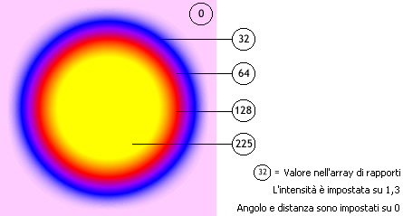
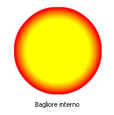
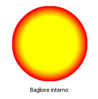

| Pacchetto | flash.filters |
| Classe | public final class GradientGlowFilter |
| Ereditarietà | GradientGlowFilter |
| Versione linguaggio: | ActionScript 3.0 |
| Versioni runtime: | AIR 1.0, Flash Player 9 |
L'uso dei filtri dipende dall'oggetto a cui il filtro viene applicato:
- Per applicare filtri agli oggetti di visualizzazione, utilizzate la proprietà
filters. L'impostazione della proprietàfiltersdi un oggetto non modifica l'oggetto ed è possibile eliminare il filtro cancellando la proprietàfilters. - Per applicare filtri a oggetti BitmapData, utilizzate il metodo
BitmapData.applyFilter(). Quando si chiamaapplyFilter()su un oggetto BitmapData, vengono acquisiti l'oggetto BitmapData di origine e l'oggetto filtro e viene generata un'immagine filtrata come risultato.
Se applicate un filtro a un oggetto di visualizzazione, la proprietà cacheAsBitmap dell'oggetto viene impostata su true. Se cancellate tutti i filtri, viene ripristinato il valore originario di cacheAsBitmap.
Questo filtro supporta la modifica in scala sullo stage, ma non supporta le funzioni generiche di modifica in scala, rotazione e inclinazione; se l'oggetto stesso viene modificato in scala (se scaleX e scaleY sono impostati su un valore diverso da 1.0), l'effetto filtro non viene modificato in scala. La modifica in scala avviene solo quando si ingrandisce lo stage.
Un filtro non viene applicato se l'immagine risultante supera le dimensioni massime. In AIR 1.5 e Flash Player 10, la dimensione massima è di 8.191 pixel in larghezza o altezza, mentre il numero totale di pixel non può essere superiore a 16.777.215, pertanto se un'immagine ha una larghezza di 8.191 pixel, può avere solo una lunghezza di 2.048 pixel. In Flash Player 9 e versioni precedenti e in AIR 1.1 e versioni precedenti, la limitazione è di 2.880 pixel in altezza e 2.880 pixel in larghezza. Ad esempio, se ingrandite un clip filmato di grandi dimensioni quando il filtro è applicato, il filtro viene disattivato se l'immagine risultante supera le dimensioni massime.
Elementi API correlati
flash.display.BitmapData.applyFilter()
flash.display.DisplayObject.cacheAsBitmap
flash.display.DisplayObject.filters
Classe GlowFilter
 Nascondi proprietà pubbliche ereditate
Nascondi proprietà pubbliche ereditate Mostra proprietà pubbliche ereditate
Mostra proprietà pubbliche ereditate| Proprietà | Definito da | ||
|---|---|---|---|
| alphas : Array
Un array di valori di trasparenza alfa per i colori corrispondenti nell'array dei colori. | GradientGlowFilter | ||
| angle : Number
L'angolo, espresso in gradi. | GradientGlowFilter | ||
| blurX : Number
La quantità di sfocatura orizzontale. | GradientGlowFilter | ||
| blurY : Number
La quantità di sfocatura verticale. | GradientGlowFilter | ||
| colors : Array
Un array di colori che definisce un gradiente. | GradientGlowFilter | ||
 | constructor : Object
Un riferimento all'oggetto classe o alla funzione di costruzione per una determinata istanza di oggetto. | Object | |
| distance : Number
La distanza di offset del bagliore. | GradientGlowFilter | ||
| knockout : Boolean
Specifica se l'oggetto presenta un effetto di foratura. | GradientGlowFilter | ||
| quality : int
Il numero di applicazioni del filtro. | GradientGlowFilter | ||
| ratios : Array
Un array di rapporti di distribuzione del colore per i colori corrispondenti nell'array colors. | GradientGlowFilter | ||
| strength : Number
L'intensità dell'impressione o applicazione. | GradientGlowFilter | ||
| type : String
La posizione dell'effetto filtro. | GradientGlowFilter | ||
| Metodo | Definito da | ||
|---|---|---|---|
GradientGlowFilter(distance:Number = 4.0, angle:Number = 45, colors:Array = null, alphas:Array = null, ratios:Array = null, blurX:Number = 4.0, blurY:Number = 4.0, strength:Number = 1, quality:int = 1, type:String = "inner", knockout:Boolean = false)
Inizializza il filtro con i parametri specificati. | GradientGlowFilter | ||
[override]
Restituisce una copia di questo oggetto filtro. | GradientGlowFilter | ||
|
Indica se per un oggetto è definita una proprietà specifica. | Object | |
|
Indica se un'istanza della classe Object si trova nella catena di prototipi dell'oggetto specificato come parametro. | Object | |
|
Indica se la proprietà specificata esiste ed è enumerabile. | Object | |
|
Imposta la disponibilità di una proprietà dinamica per le operazioni cicliche. | Object | |
|
Restituisce la rappresentazione in formato stringa di questo oggetto, formattato in base alle convenzioni specifiche per le versioni localizzate. | Object | |
|
Restituisce la rappresentazione in formato stringa dell'oggetto specificato. | Object | |
|
Restituisce il valore di base dell'oggetto specificato. | Object | |
alphas | proprietà |
alphas:Array| Versione linguaggio: | ActionScript 3.0 |
| Versioni runtime: | AIR 1.0, Flash Player 9 |
Un array di valori di trasparenza alfa per i colori corrispondenti nell'array colors. I valori validi per ciascun elemento dell'array sono compresi tra 0 e 1. Ad esempio, 0,25 imposta il valore di trasparenza alfa sul 25%.
Non è possibile cambiare la proprietà alphas mediante la modifica diretta dei relativi valori. Al contrario, è necessario ottenere un riferimento a alphas, modificarlo e quindi impostare alphas sul riferimento.
Le proprietà colors, alphas e ratios sono correlate. Il primo elemento dell'array colors corrisponde al primo elemento dell'array alphas e dell'array ratios, e così via.
Implementazione
public function get alphas():Array public function set alphas(value:Array):voidGenera
TypeError — Quando viene impostato, l'array è null.
|
Elementi API correlati
angle | proprietà |
angle:Number| Versione linguaggio: | ActionScript 3.0 |
| Versioni runtime: | AIR 1.0, Flash Player 9 |
L'angolo, espresso in gradi. I valori validi sono compresi tra 0 e 360. Il valore predefinito è 45.
Il valore angle rappresenta l'angolazione della fonte di luce teorica che cade sull'oggetto e determina la posizione dell'effetto rispetto all'oggetto. Se distance è impostata su 0, l'effetto non è spostato rispetto all'oggetto e pertanto la proprietà angle non ha alcun effetto.
Implementazione
public function get angle():Number public function set angle(value:Number):voidblurX | proprietà |
blurX:Number| Versione linguaggio: | ActionScript 3.0 |
| Versioni runtime: | AIR 1.0, Flash Player 9 |
La quantità di sfocatura orizzontale. I valori validi sono compresi tra 0 e 255. Un valore di sfocatura pari a 1 o inferiore indica che l'immagine viene copiata senza alterazioni. Il valore predefinito è 4. I valori che sono potenze di 2 (come 2, 4, 8, 16 e 32) vengono ottimizzati per eseguire il rendering più rapidamente di altri valori.
Implementazione
public function get blurX():Number public function set blurX(value:Number):voidblurY | proprietà |
blurY:Number| Versione linguaggio: | ActionScript 3.0 |
| Versioni runtime: | AIR 1.0, Flash Player 9 |
La quantità di sfocatura verticale. I valori validi sono compresi tra 0 e 255. Un valore di sfocatura pari a 1 o inferiore indica che l'immagine viene copiata senza alterazioni. Il valore predefinito è 4. I valori che sono potenze di 2 (come 2, 4, 8, 16 e 32) vengono ottimizzati per eseguire il rendering più rapidamente di altri valori.
Implementazione
public function get blurY():Number public function set blurY(value:Number):voidcolors | proprietà |
colors:Array| Versione linguaggio: | ActionScript 3.0 |
| Versioni runtime: | AIR 1.0, Flash Player 9 |
Un array di colori che definisce un gradiente. Ad esempio il rosso è 0xFF0000, il blu è 0x0000FF e così via.
Non è possibile cambiare la proprietà colors mediante la modifica diretta dei relativi valori. È necessario invece ottenere un riferimento a colors, modificarlo e quindi impostare colors sul riferimento.
Le proprietà colors, alphas e ratios sono correlate. Il primo elemento dell'array colors corrisponde al primo elemento dell'array alphas e dell'array ratios, e così via.
Implementazione
public function get colors():Array public function set colors(value:Array):voidGenera
TypeError — Quando viene impostato, l'array è null.
|
Elementi API correlati
distance | proprietà |
knockout | proprietà |
knockout:Boolean| Versione linguaggio: | ActionScript 3.0 |
| Versioni runtime: | AIR 1.0, Flash Player 9 |
Specifica se l'oggetto presenta un effetto di foratura. L'effetto di foratura rende trasparente il riempimento dell'oggetto e rivela il colore di sfondo del documento. Il valore true specifica un effetto di foratura; il valore predefinito è false (nessun effetto di foratura).
Implementazione
public function get knockout():Boolean public function set knockout(value:Boolean):voidquality | proprietà |
quality:int| Versione linguaggio: | ActionScript 3.0 |
| Versioni runtime: | AIR 1.0, Flash Player 9 |
Il numero di applicazioni del filtro. Il valore predefinito è BitmapFilterQuality.LOW, che equivale ad applicare il filtro una volta. Il valore BitmapFilterQuality.MEDIUM applica il filtro due volte; il valore BitmapFilterQuality.HIGH lo applica tre volte. Il rendering dei filtri con valori bassi avviene più rapidamente.
Per la maggior parte delle applicazioni è sufficiente un valore quality basso, medio o alto. Benché sia possibile utilizzare valori numerici aggiuntivi fino a 15 per ottenere effetti diversi, il rendering dei valori elevati avviene più lentamente. Anziché aumentare il valore di quality, spesso è possibile ottenere un effetto simile (e con un rendering più veloce) semplicemente incrementando i valori delle proprietà blurX e blurY.
Implementazione
public function get quality():int public function set quality(value:int):voidElementi API correlati
ratios | proprietà |
ratios:Array| Versione linguaggio: | ActionScript 3.0 |
| Versioni runtime: | AIR 1.0, Flash Player 9 |
Un array di rapporti di distribuzione del colore per i colori corrispondenti nell'array colors. I valori validi sono compresi tra 0 e 255.
Non è possibile cambiare la proprietà ratios mediante la modifica diretta dei relativi valori. È necessario invece ottenere un riferimento a ratios, modificarlo e quindi impostare ratios sul riferimento.
Le proprietà colors, alphas e ratios sono correlate. Il primo elemento dell'array colors corrisponde al primo elemento dell'array alphas e dell'array ratios, e così via.
Immaginate il filtro bagliore con gradiente come un bagliore che si diffonde dal centro dell'oggetto (se il valore di distance è impostato su 0); i gradienti sono strisce di colori che si fondono l'uno nell'altro. Il primo colore dell'array colors è il colore più esterno del bagliore. L'ultimo colore è il colore più interno del bagliore.
Ogni valore dell'array ratios determina la posizione del colore sul raggio del gradiente, in cui 0 e 255 rappresentano rispettivamente il punto più esterno e più interno del gradiente. I valori del rapporto possono variare da 0 a 255 pixel, aumentando di valore; ad esempio [0, 64, 128, 200, 255]. I valori compresi tra 0 e 128 appaiono sui bordi esterni del bagliore. I valori compresi tra 129 e 255 appaiono nell'area interna del bagliore. A seconda dei valori del rapporto dei colori e del valore type del filtro, i colori del filtro possono essere oscurati dall'oggetto a cui il filtro è applicato.
Nel codice e nell'immagine seguente viene applicato un filtro a un clip filmato con un cerchio nero, impostando il tipo su "full". A scopo di esemplificazione, il primo colore dell'array colors, il rosa, ha un valore alpha pari a 1, pertanto è visibile rispetto allo sfondo bianco (nella pratica si tende a non visualizzare il primo colore in questo modo). L'ultimo colore dell'array, il giallo, oscura il cerchio nero a cui è applicato il filtro:
var colors:Array = [0xFFCCFF, 0x0000FF, 0x9900FF, 0xFF0000, 0xFFFF00]; var alphas:Array = [1, 1, 1, 1, 1]; var ratios:Array = [0, 32, 64, 128, 225]; var myGGF:GradientGlowFilter = new GradientGlowFilter(0, 0, colors, alphas, ratios, 50, 50, 1, 2, "full", false);

Per ottenere un effetto uniforme sullo sfondo del documento quando si imposta il valore type su "outer" o "full", impostate il primo colore dell'array sullo stesso colore dello sfondo del documento o il valore di alfa del primo colore su 0; entrambe le tecniche consentono di fondere il filtro con lo sfondo.
Se effettuate due piccole modifiche al codice, l'effetto del bagliore può essere molto diverso, anche con gli stessi array ratios e colors. Impostate il valore di alfa del primo colore dell'array su 0 per consentire la fusione del filtro con lo sfondo bianco del documento e impostate la proprietà type su "outer" o "inner". Osservate i risultati mostrati nelle immagini seguenti.
 

Tenere presente che l'applicazione dei colori nel gradiente varia a seconda dei valori delle proprietà blurX, blurY, strength e quality nonché dei valori ratios.
Implementazione
public function get ratios():Array public function set ratios(value:Array):voidGenera
TypeError — Quando viene impostato, l'array è null.
|
Elementi API correlati
strength | proprietà |
strength:Number| Versione linguaggio: | ActionScript 3.0 |
| Versioni runtime: | AIR 1.0, Flash Player 9 |
L'intensità dell'impressione o applicazione. Più elevato è il valore, maggiore è la quantità di colore impressa e maggiore è il contrasto tra il bagliore e lo sfondo. I valori validi sono compresi tra 0 e 255. Un valore pari a 0 indica che il filtro non è applicato. Il valore predefinito è 1.
Implementazione
public function get strength():Number public function set strength(value:Number):voidtype | proprietà |
type:String| Versione linguaggio: | ActionScript 3.0 |
| Versioni runtime: | AIR 1.0, Flash Player 9 |
La posizione dell'effetto filtro. I valori possibili sono costanti di flash.filters.BitmapFilterType:
BitmapFilterType.OUTER- Bagliore applicato al bordo esterno dell'oggetto.BitmapFilterType.INNER- Bagliore applicato al bordo interno dell'oggetto; impostazione predefinita.BitmapFilterType.FULL- Bagliore applicato sopra l'oggetto.
Implementazione
public function get type():String public function set type(value:String):voidGenera
TypeError — Quando viene impostato, l'oggetto String è null.
|
GradientGlowFilter | () | Funzione di costruzione |
public function GradientGlowFilter(distance:Number = 4.0, angle:Number = 45, colors:Array = null, alphas:Array = null, ratios:Array = null, blurX:Number = 4.0, blurY:Number = 4.0, strength:Number = 1, quality:int = 1, type:String = "inner", knockout:Boolean = false)| Versione linguaggio: | ActionScript 3.0 |
| Versioni runtime: | AIR 1.0, Flash Player 9 |
Inizializza il filtro con i parametri specificati.
Parametridistance:Number (default = 4.0) | |
angle:Number (default = 45) | |
colors:Array (default = null) | |
alphas:Array (default = null)colors. I valori validi per ciascun elemento dell'array sono compresi tra 0 e 1. Ad esempio, il valore 0,25 imposta un valore di trasparenza alfa del 25%.
| |
ratios:Array (default = null) | |
blurX:Number (default = 4.0) | |
blurY:Number (default = 4.0) | |
strength:Number (default = 1) | |
quality:int (default = 1)
Per ulteriori informazioni, vedete la descrizione della proprietà | |
type:String (default = "inner")
| |
knockout:Boolean (default = false)true specifica un effetto di foratura; il valore predefinito è false (nessun effetto di foratura).
|
clone | () | metodo |
override public function clone():BitmapFilter| Versione linguaggio: | ActionScript 3.0 |
| Versioni runtime: | AIR 1.0, Flash Player 9 |
Restituisce una copia di questo oggetto filtro.
RestituisceBitmapFilter — Una nuova istanza GradientGlowFilter con tutte le proprietà dell'istanza originale.
|
- Importare le classi richieste.
- Dichiarate le variabili globali utilizzate per definire il quadrato e il filtro.
- Create la funzione di costruzione che esegue le seguenti operazioni:
- Chiama il metodo
draw(), che utilizza i metodi della classe Graphics a cui si accede tramite la proprietàgraphicsdi Sprite per disegnare un quadrato. - Crea un oggetto BitmapFilter denominato
filtere assegna ad esso il valore restituito da una chiamata agetBitmapFilter(), che crea il filtro. - Crea un nuovo array denominato
myFilterse aggiungefilterad esso. - Assegna
myFiltersalla proprietàfiltersdell'oggetto GradientGlowFilterExample. In questo modo vengono applicati tutti i filtri presenti inmyFilters; in questo caso solofilter.
- Chiama il metodo
package {
import flash.filters.BitmapFilter;
import flash.filters.BitmapFilterQuality;
import flash.filters.BitmapFilterType;
import flash.filters.GradientGlowFilter;
import flash.display.Sprite;
public class GradientGlowFilterExample extends Sprite {
private var bgColor:uint = 0xCCCCCC;
private var size:uint = 80;
private var offset:uint = 50;
private var distance:Number = 0;
private var angleInDegrees:Number = 45;
private var colors:Array = [0xFFFFFF, 0xFF0000, 0xFFFF00, 0x00CCFF];
private var alphas:Array = [0, 1, 1, 1];
private var ratios:Array = [0, 63, 126, 255];
private var blurX:Number = 50;
private var blurY:Number = 50;
private var strength:Number = 2.5;
private var quality:Number = BitmapFilterQuality.HIGH;
private var type:String = BitmapFilterType.OUTER;
private var knockout:Boolean = false;
public function GradientGlowFilterExample() {
draw();
var filter:BitmapFilter = getBitmapFilter();
var myFilters:Array = new Array();
myFilters.push(filter);
filters = myFilters;
}
private function getBitmapFilter():BitmapFilter {
return new GradientGlowFilter(distance,
angleInDegrees,
colors,
alphas,
ratios,
blurX,
blurY,
strength,
quality,
type,
knockout);
}
private function draw():void {
graphics.beginFill(bgColor);
graphics.drawRect(offset, offset, size, size);
graphics.endFill();
}
}
}
Tue Jun 12 2018, 02:44 PM Z